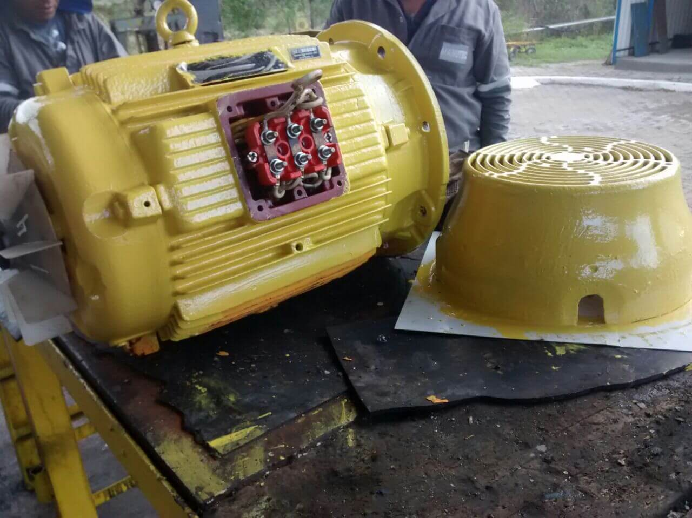

Principais Serviços

Limpeza e Restauração
Manutenção das peças é feita de forma totalmente profissional, junto com uma limpeza que deixa com a aparencia de nova!
Pintura com Porcelanato
Pintura com porcelanato liquido, deixando o ambiente mais bonito e limpo, facilitando a limpeza do local!

Isolamentos térmicos
Chama-se isolante térmico um material ou estrutura que dificulta a dissipação de calor, usado na construção e caracterizado por sua alta resistência térmica.